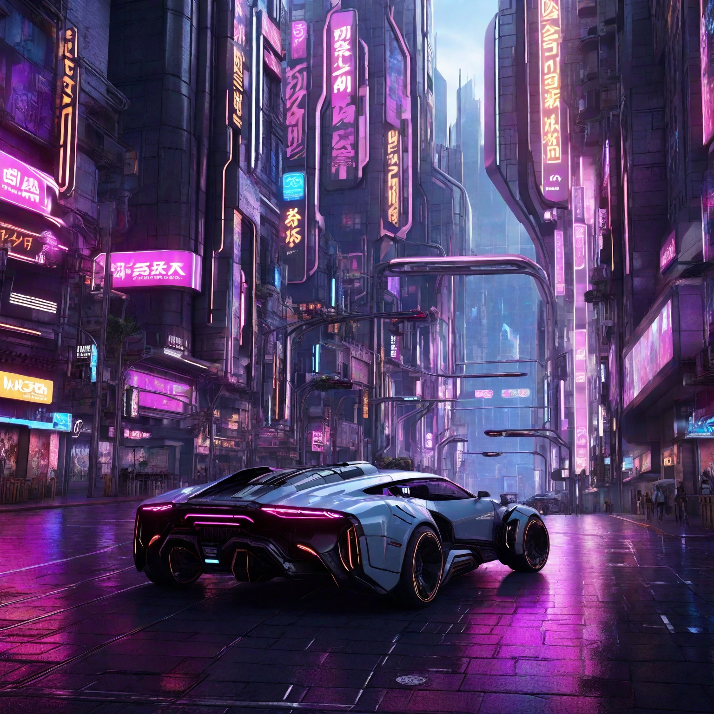

The resolution is 1536 x 1536px. It was created on 14/11/23 at 2:39 PM. The sampler used is Leonardo. The seed number is 11727360. The preset applied is Leonardo Style. There is no prompt magic. The init strength is not applicable as there is no init image. There is no high contrast.
Prompt - Design an 8K resolution image of a bustling Cyberpunk street with vibrant neon signs casting dynamic lighting on futuristic vehicles and pedestrians. Create a hyperrealistic HDR-lit image of a high-tech Cyberpunk plaza, highlighting cutting-edge technology and futuristic urban planning. Experiment with Unreal Engine v5 rendering techniques to enhance the overall realism and visual impact of the generated images. Incorporate UHD textures and materials to add a level of detail that surpasses typical expectations, focusing on surfaces like concrete, metal, and glass.